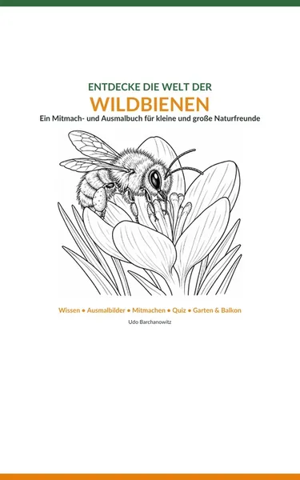
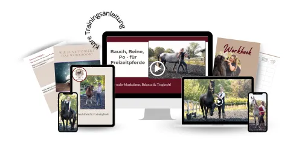
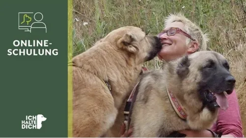
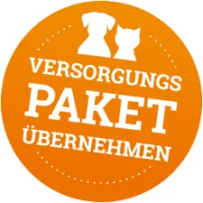
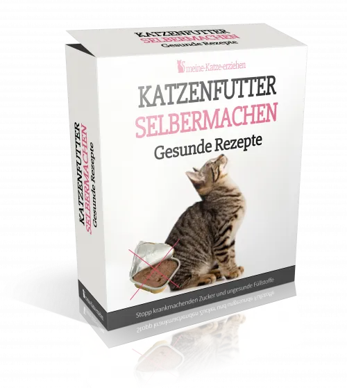

Wildbienen entdecken – Mitmach- und Ausmalbuch
Produktprofil · Marktplatz-Daten 2026-10-13 · Verkaufsseiten-Recherche 2026-10-13 · Kategorien: Animals & Pets, Family & Children, Home & Garden
- Wildbienen entdecken – Mitmach- und Ausmalbuch ist ein/e E-Book in Animals & Pets und Family & Children, vertrieben über den Digistore24-Marktplatz von Anbieter ITServiceMB, gelistet seit 2026-10-05.
- Listenpreis $13.06; Digistore24 meldet — Checkout-Konversion, — Stornierungsquote und 50 % Affiliate-Provision.
- Verdienst pro Verkauf (Affiliate): $6.53 (Anbieter-seitige Statistik, keine Prognose).
Interesse an Wildbienen entdecken – Mitmach- und Ausmalbuch? Aktueller Preis, Boni und Garantiebedingungen finden Sie auf der offiziellen Seite des Anbieters:
Offizielle Verkaufsseite ansehen
Affiliate-Link (Werbung) — wir verdienen ggf. eine Provision, ohne Mehrkosten für Sie.

Marktplatz-Daten
| Produkttyp | E-Book |
|---|---|
| Preis | $13.06 (Single payment) |
| Affiliate-Provision | 50 % |
| Garantie/Rückgabe | Laut Verkaufsseite des Anbieters — vor dem Kauf auf der offiziellen Seite prüfen |
| Anbieter | ITServiceMB (gelistet seit 2026-10-05) |
| Marktplatz-Statistiken* | Checkout-Konversion — · Stornoquote — · Verdienst/Verkauf $6.53 |
* Anbieter-seitige Statistiken von Digistore24; sie hängen von der Traffic-Qualität ab und sind keine Prognose.
Marktplatz-Beschreibung des Anbieters
<p><strong>84 Seiten voller Wildbienenwissen, Ausmalspaß und Naturentdeckungen!</strong></p> <p>„Wildbienen – Mitmach- & Ausmalbuch“ ist ein digitales PDF-E-Book für Familien, naturinteressierte Kinder und Erwachsene.</p> <p>Das Buch verbindet verständlich erklärtes Wissen über Wildbienen mit Ausmalbildern, Forscher- und Mitmachseiten, Quizfragen und praktischen Tipps.</p> <p>Die Leser entdecken verschiedene Wildbienenarten, erfahren mehr über Nahrung und Nistplätze und lernen, wie Garten oder Balkon wildbienenfreundlicher gestaltet werden können.</p> <p><strong>Das erwartet die Käufer:</strong><br />• 84 gestaltete Seiten<br />• Wildbienenwissen und Artenporträts<br />• Ausmalbilder und Forscherseiten<br />• Quiz und Beobachtungsaufgaben<br />• Tipps für Garten und Balkon<br />• Wildbienen-Aktionsplan<br />• Originalfotos vom Bienenfutterautomaten und der Blühwiese in Dülken<br />• Sofortiger digitaler PDF-Download</p> <p><strong>Verkaufspreis: 12,90 €</strong></p> <p><strong>Affiliate-Provision: 50 %</strong></p> <p>Das Thema eignet sich besonders für Affiliates aus den Bereichen Natur, Garten, Familie, Kinder, Umwelt, Nachhaltigkeit und Lernen.</p>
Von der Verkaufsseite des Anbieters
Seitentitel: Entdecke die Welt der Wildbienen – Mitmach- und Ausmalbuch
Meta-Beschreibung: 84-seitiges digitales Mitmach- und Ausmalbuch über Wildbienen – mit Wissensseiten, Artenporträts, Ausmalbildern, Quiz, Gartentipps und Originalfotos aus Dülken.
Hauptüberschrift
Entdecke die Welt der Wildbienen
Abschnitts-Überschriften
- Was dich im E-Book erwartet
- Enthalten sind
- Für wen ist das Buch?
- Direkt als PDF erhalten
- ⓘ WICHTIGE PRODUKT- UND LIEFERINFORMATIONEN:
Einstiegstext
Ein Mitmach- und Ausmalbuch für kleine und große Naturfreunde – mit verständlichem Wildbienenwissen, Artenporträts, Ausmalbildern, Quiz, Beobachtungsideen und Originalfotos vom Bienenfutterautomaten und der Blühwiese in Dülken.
Leicht verständliche Wissensseiten erklären Lebensweise, Nahrung, Nistplätze und Entwicklung verschiedener Wildbienen.
Ausmalbilder, Beobachtungsideen und ein Wildbienen-Quiz machen aus dem Sachbuch ein Mitmachbuch für die ganze Familie.
Originalfotos zeigen den Bienenfutterautomaten und die echte Blühwiese an seinem Standort – ein konkretes Beispiel für Wildbienenhilfe.
Recherche-Methode: rohes HTML · 383 Wörter · Qualität: medium · recherchiert am 2026-10-13. Vollständige Recherche-Datei (MD) ↗
Wie Produkte dieser Art geliefert werden
Allgemeiner Hinweis zu diesem Produkttyp (keine anbieterspezifische Anleitung): E-Books auf Digistore24 werden als digitaler Download geliefert (meist PDF/EPUB): direkt nach dem Checkout erhalten Sie einen Downloadlink oder Mitgliederzugang und können auf jedem Gerät lesen. Für die genaue Anwendung von Wildbienen entdecken – Mitmach- und Ausmalbuch sind die offizielle Verkaufsseite und die enthaltenen Materialien maßgeblich.
Gut zu wissen
- Keine Garantie-Formulierung in unserer Recherche gefunden — bestätigen Sie das Rückgabefenster auf der offiziellen Seite, bevor Sie kaufen.
- Marktplatz-Zahlen (Preis, Provision, Konversion, Stornoquote) — Quelle: offizielle Digistore24-Marktplatz-API (Affiliate-Sicht), Stand 2026-10-13. Gegenprüfung: Marktplatz-Suche nach Produkt-ID 741971.
- Verkaufsseiten-Zitate — Quelle: https://kurven-klasse.de/biene/, abgerufen 2026-10-13 (Methode: rohes HTML). Verify: offizielle Seite öffnen.
- Garantie / Rückgabe — vom Anbieter festgelegt; vor dem Kauf auf der Verkaufsseite bestätigen.
- Nicht von uns geprüft: Produktqualität, Ergebnisse, Testimonials — kein Praxistest für dieses Listing durchgeführt.
Häufige Fragen zu Wildbienen entdecken – Mitmach- und Ausmalbuch
Antworten aus dem Marktplatz-Snapshot (2026-10-13) und der Verkaufsseiten-Recherche (2026-10-13); Anbieteraussagen sind inline gekennzeichnet.
Was ist Wildbienen entdecken – Mitmach- und Ausmalbuch?
Wildbienen entdecken – Mitmach- und Ausmalbuch ist ein Angebot des Typs „E-Book" im Digistore24-Marktplatz, Anbieter: ITServiceMB, gelistet seit 2026-10-05. Eingepflegt unter Tiere & Haustiere und Familie & Kinder. Digistore24 wickelt Checkout, Lieferung und Rückgaben ab.
Wie viel kostet Wildbienen entdecken – Mitmach- und Ausmalbuch?
Der Digistore24-Marktplatz listet es für $13.06 (single payment). Preise legt der Anbieter fest und können sich ändern — der Marktplatz-Eintrag oben zeigt den Schnappschuss; die offizielle Verkaufsseite zeigt den aktuellen Preis.
Gibt es eine Geld-zurück-Garantie für Wildbienen entdecken – Mitmach- und Ausmalbuch?
Unsere Verkaufsseiten-Recherche hat keine explizite Garantie-Formulierung gefunden. Viele Digistore24-Produkte bieten 60 Tage Geld-zurück, aber das legt jeder Anbieter selbst fest — bestätigen Sie es auf der offiziellen Verkaufsseite, bevor Sie kaufen.
Ist Wildbienen entdecken – Mitmach- und Ausmalbuch seriös?
Wir bewerten keine Seriosität — wir veröffentlichen überprüfbare Zahlen: Anbieter ITServiceMB (gelistet seit 2026-10-05), Checkout-Konversion —, Stornoquote —, Affiliate-Verdienst/Verkauf $6.53 (alles Anbieter-seitige Marktplatz-Statistiken). Lesen Sie unsere 6-Punkte-Bewertungsmethode und entscheiden Sie anhand der Zahlen — oder diskutieren Sie Wildbienen entdecken – Mitmach- und Ausmalbuch auf GitHub.
Wo kann ich Wildbienen entdecken – Mitmach- und Ausmalbuch sicher kaufen?
Nur über die offizielle Verkaufsseite, die auf dieser Seite verlinkt ist (Checkout und Rückgaben laufen über Digistore24). Prüfen Sie dort Preis und Garantie vor der Bestellung. Der Link ist ein Affiliate-Link — der Kauf unterstützt diese Website ohne Mehrkosten für Sie.
Wie erhalte ich Wildbienen entdecken – Mitmach- und Ausmalbuch nach der Zahlung?
Der Checkout läuft über Digistore24: Nach der Zahlung erhalten Sie Ihren Zugang oder Download per E-Mail und in Ihrem Digistore24-Kundenkonto. Lieferdetails für diesen Produkttyp: E-Books auf Digistore24 werden als digitaler Download geliefert (meist PDF/EPUB): direkt nach dem Checkout erhalten Sie einen Downloadlink oder Mitgliederzugang und können auf jedem Gerät lesen. Bei Problemen kann der Digistore24-Käufersupport Ihre Bestellung wiederherstellen.
Alle 50 Käuferfragen zu Tiere & Haustiere — das komplette Kategorie-FAQ.
Wildbienen entdecken – Mitmach- und Ausmalbuch auf Reddit diskutieren
In Community-Threads vergleichen echte Käufer Erfahrungen. Wir verlinken Communities, keine einzelnen Posts — Threads verschwinden, Subreddits bleiben:
- Reddit-Suche nach „Wildbienen entdecken – Mitmach- und Ausmalbuch" — Live-Ergebnisse, von uns nicht beeinflusst.
- Top-„Erfahrungs"-Treffer dieses Jahr — selbst nach Aktualität filtern.
Passendes auf Amazon.de
Physische Produkte und Zubehör, die häufig zusammen mit Wildbienen entdecken – Mitmach- und Ausmalbuch gekauft werden:
- Gartenwerkzeug auf Amazon.de — Top-Ergebnisse, Amazon-Ranking.
- Bestseller: Gartenwerkzeug — live Liste von Amazon, von uns nicht kuratiert.
Werbung: Als Amazon-Partner verdient DigistorePicks DE an qualifizierten Käufen (Partner-tag adminstorede-21). Amazon setzt eigene Preise und Provisionen (niedrige einstellige Prozente — weit unter den 30–75% der Digistore24-Anbieter). Amazon ist ein Convenience-Angebot für Sachprodukte, kein Ersatz für das digitale Produkt oben.
Ähnliche Angebote in Tiere & Haustiere

<div> <div> <div> <p><strong>BAUCH, BEINE, PO – das Trainingsprogramm für dein Freizeitpferd</strong></p> </div>
<h2>Zertifizierter Katzenverhaltensberater / Katzencoach – Fernlehrgang der aCATemy®</h2> <p>Bewirb eine professionelle Online-Ausbildung für

<p>Diese Schulung ist hilft Haltern von Herdenschutzhunde in Familienhand, ein glückliches und harmonischen Zusammenleben zu ermöglichen.</p> <p&

<p><strong>So wird aus Lesen echte Hilfe vor Ort!</strong></p> <p><strong>Im Guide erfahren Sie:</strong></p> &l
Weitere Angebote von ITServiceMB
<p><strong>KURVEN UND KLASSE – Der Stil- und Beauty-Guide ab 50</strong></p> <p>Stil kennt kein Alter – und Kurven müssen nicht ve
Wildbienen entdecken – Mitmach- und Ausmalbuch ist auch gelistet in
Familie & Kinder (268 Produkte) · Haus & Garten (88 Produkte)
Ähnliche Preislage in Tiere & Haustiere

<p>101 Rezepte um Katzenfutter selber zu machen, was gesünder und besonders lecker für die Katze ist.</p> <p>Affiliates verdienen 50% Provisio
<p>Hoch konvertierendes eBook für Bartagamen-Pfleger.</p> <p>► Hohe Provision: 85%<br />► Sehr geringe Stornoquote<br />► Hoch kon
<p>Hallo Lieber Affiliate <br />Wenn du mein Buch bewirbst, darfst du dich <strong>auf 70%</strong> <strong>Provision pro verkau
Ähnliche Suchanfragen
Wo Sie es sich ansehen können
Wo Sie es sich ansehen können
Aktuelle Preise, Garantie und Boni finden Sie auf der offiziellen Verkaufsseite:
Offizielle Verkaufsseite ansehen
Das ist ein Affiliate-Link (Werbung) — kaufen Sie darüber, verdienen wir ggf. eine Provision, ohne Mehrkosten für Sie.
Quellen & weiterführende Informationen
- Offizielle Verkaufsseite (aktueller Preis, Garantie, Boni): kurven-klasse.de/biene/ (Affiliate-Link)
- Öffentliche Digistore24-Produktseite: digistore24.com/product/741971
- Vollständige Recherche-Datei (Markdown, versioniert): content/products/60194-wildbienen-entdecken-mitmach-und-ausmalbuch.md
- Affiliate-Supportseite des Anbieters: www.kurven-klasse.de/biene/affiliate/
- Marktplatz-Kategorie: Tiere & Haustiere
Wie wir Produkte wie Wildbienen entdecken – Mitmach- und Ausmalbuch bewerten
Sechs Prüfungen, ausschließlich mit offiziellen Marktplatz-Zahlen. Die vollständige Bewertungsmethode lesen · unsere Recherche-Standards & Kennzeichnung.
Fragen oder eigene Erfahrungen mit Wildbienen entdecken – Mitmach- und Ausmalbuch?
Praxis-Tests veröffentlichen wir erst, nachdem wir ein Produkt selbst gekauft haben — aber Ihre Erfahrung hilft anderen Lesern: Diskussion zu Wildbienen entdecken – Mitmach- und Ausmalbuch auf GitHub starten/verfolgen. Falsche Zahl gefunden? Korrektur melden — jede Seite zeigt ihre Datenstände, Korrekturen gelten für die ganze Website.